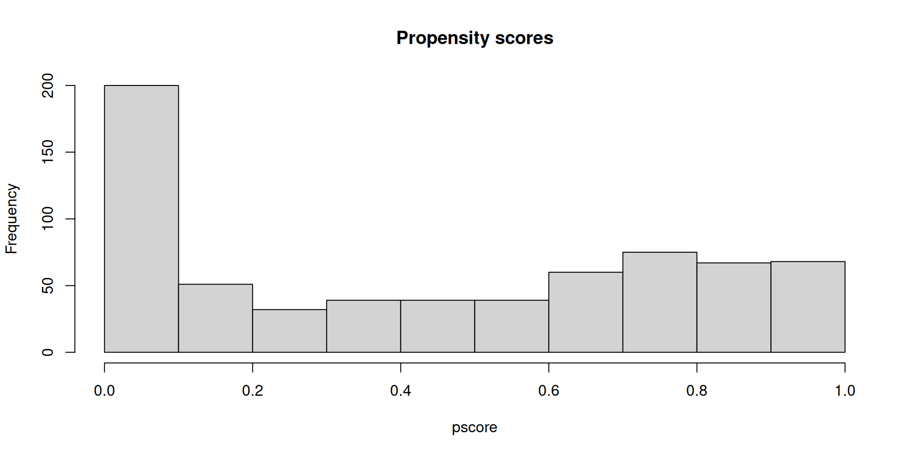
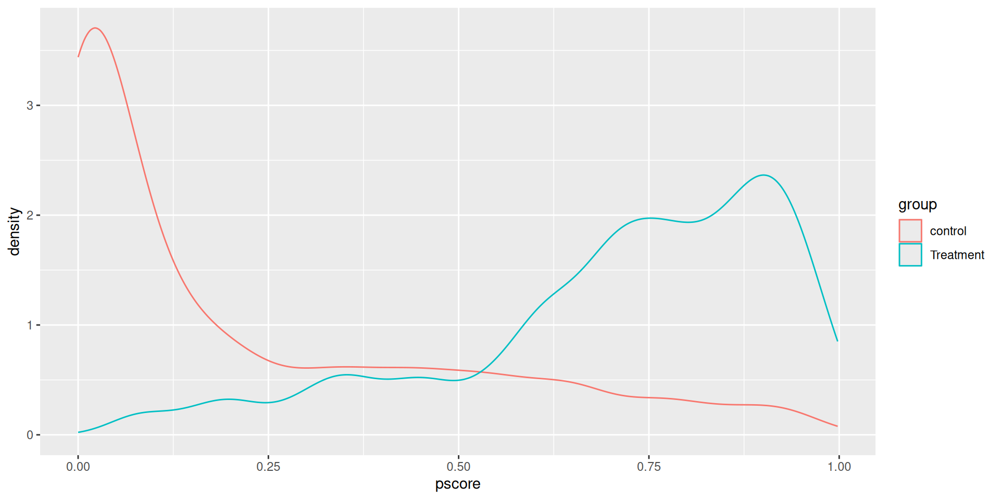
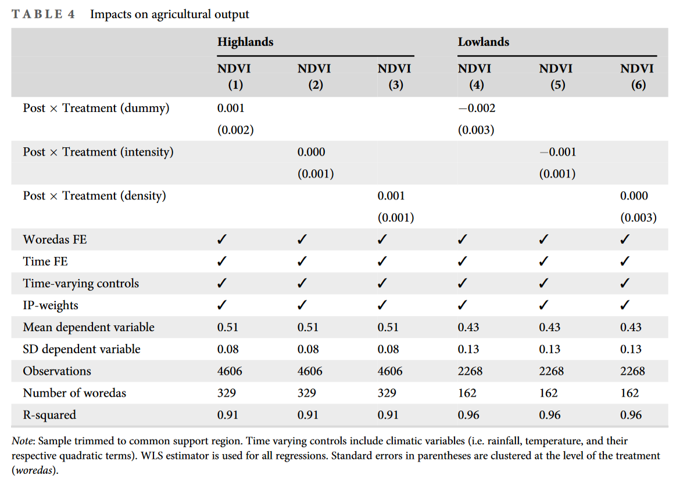
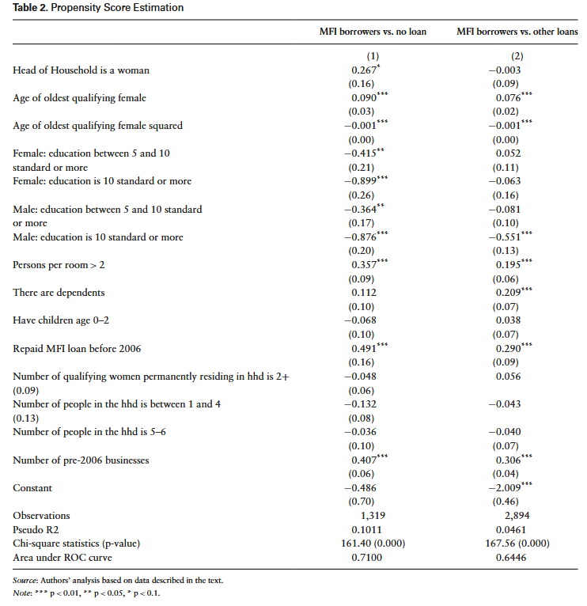
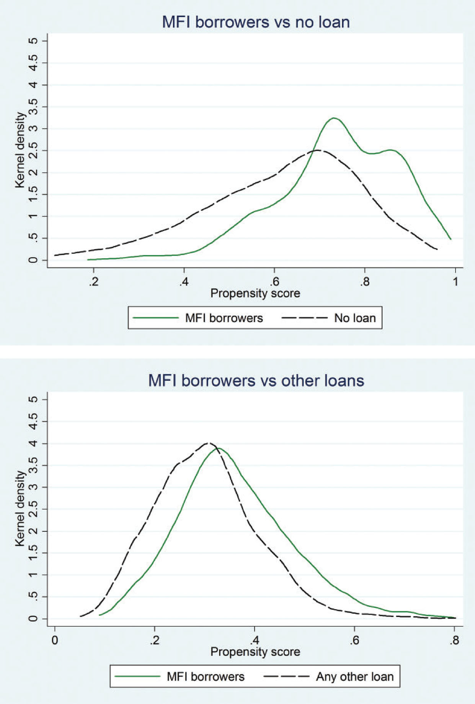
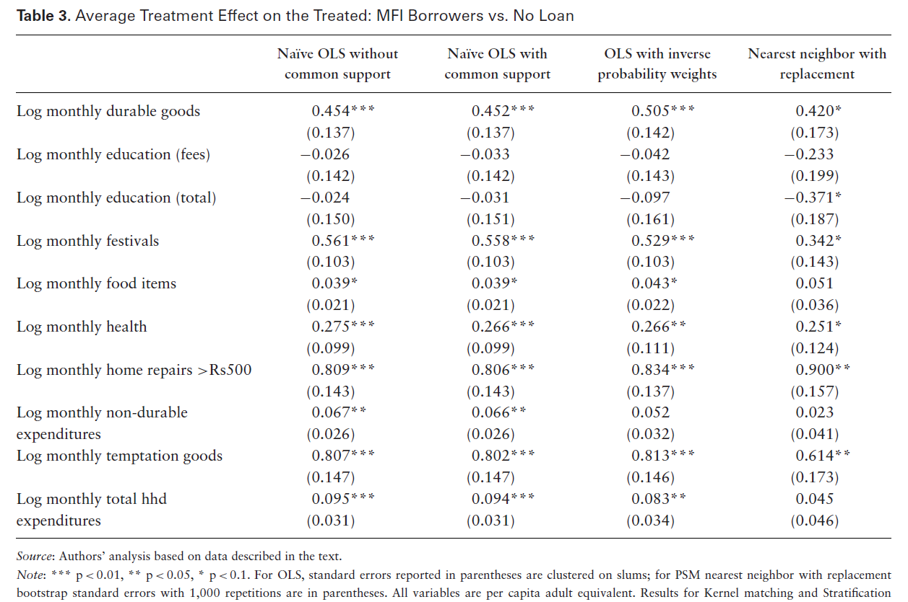
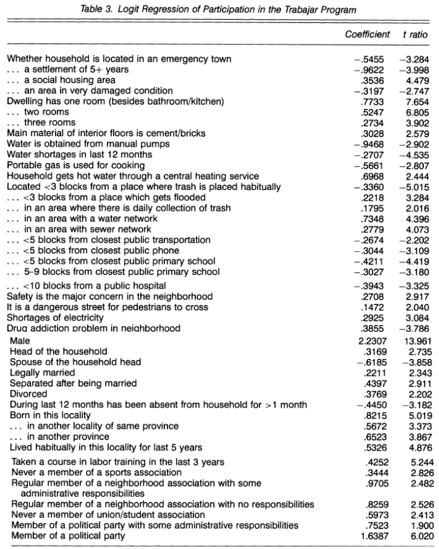
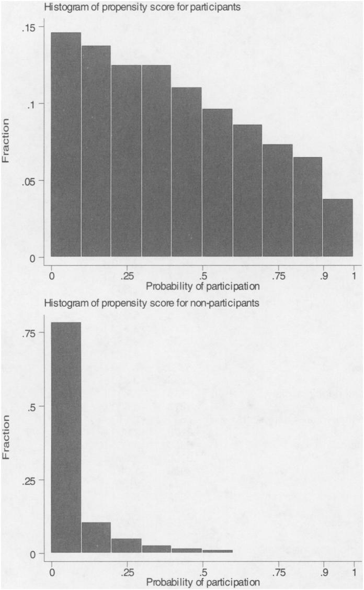
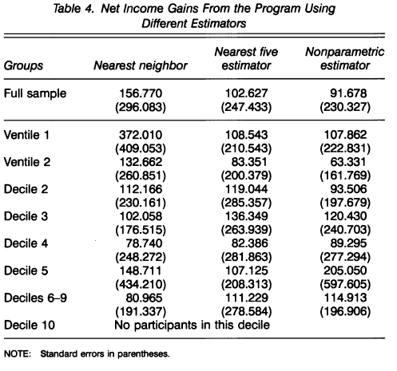

Tutorial #5
PhD student, Department of Economics, Sciences Po
We use the data from Gazeaud and Stephane (2023) to estimate the effect of Ethiopia’s Productive Safety Net Program with matching, and test different uses of propensity scores.
Question
Using rainfall, temperature, bl_pop_density, bl_NTL, start, end, elevation, slope, cultivated_area and area, compute the probability of treatment of a woreda (OBJECTID).
treatment does not vary over time: it indicates whether units received treatment post-2007. We can collapse easily to one row per woreda using pre-2007 means.
vars <- c("rainfall",
"temperature",
"bl_pop_density",
"bl_NTL",
"start",
"end",
"elevation",
"slope",
"cultivated_area",
"area")
df_pre2007 <- df %>%
filter(year < 2007)
collapsed <- df_pre2007 %>%
group_by(OBJECTID) %>%
summarise(
treatment = mean(treatment, na.rm = TRUE),
across(all_of(vars), ~mean(.x, na.rm = TRUE)),
.groups = "drop"
) %>%
mutate(
rainfall_sq = rainfall^2,
temperature_sq = temperature^2
)We compute the propensity scores using logistic regression:
############### Estimate the logit ######################
logit <- glm(
treatment ~ rainfall + temperature + I(rainfall^2) + I(temperature^2) +
bl_pop_density + bl_NTL + start + end + elevation + slope +
cultivated_area + area,
data = collapsed,
family = binomial()
)
############### Cluster-robust standard errors ######################
# This step was not expected. The aim is to show you the command
# Remember that we mentioned clustering of standard errors when dealing with non-homoskedastic error terms. Here is 1 use case.
V_cl <- sandwich::vcovCL(logit, cluster = collapsed$OBJECTID, type = "HC1")
tab_cl <- lmtest::coeftest(logit, vcov = V_cl)
############### Predict propensity scores ######################
collapsed <- collapsed %>%
mutate(pscore = predict(logit, newdata = collapsed, type = "response"))
df <- df %>%
left_join(select(collapsed, OBJECTID, pscore), by = "OBJECTID")
The package margins gives average marginal effects (AME):
factor AME SE z p lower upper
area 0.0950 0.0914 1.0400 0.2983 -0.0840 0.2741
bl_NTL -0.2497 0.0288 -8.6824 0.0000 -0.3060 -0.1933
bl_pop_density 0.0053 0.0006 8.4817 0.0000 0.0041 0.0066
cultivated_area 0.1845 0.1243 1.4847 0.1376 -0.0591 0.4282
elevation 0.0000 0.0001 0.5760 0.5646 -0.0001 0.0001
end 0.0918 0.0263 3.4877 0.0005 0.0402 0.1435
rainfall -0.0015 0.0004 -3.7554 0.0002 -0.0023 -0.0007
slope 0.0370 0.0058 6.4261 0.0000 0.0257 0.0482
start 0.0754 0.0245 3.0761 0.0021 0.0274 0.1234
temperature 0.0362 0.0058 6.2498 0.0000 0.0249 0.0476You can also compute marginal effect at the mean (MEM) for temperature, by hand:
\[ \text{MEM}_{T} = \big(\beta_T + 2\,\beta_{T^2}\,\bar T\big)\,\Lambda(\bar x'\beta)\big(1-\Lambda(\bar x'\beta)\big) \]
b <- coef(logit)
x_bar <- c(
`(Intercept)` = 1,
rainfall = mean(collapsed$rainfall, na.rm = TRUE),
`I(rainfall^2)` = mean(collapsed$rainfall, na.rm = TRUE)^2,
temperature = mean(collapsed$temperature, na.rm = TRUE),
`I(temperature^2)` = mean(collapsed$temperature, na.rm = TRUE)^2,
bl_pop_density = mean(collapsed$bl_pop_density, na.rm = TRUE),
bl_NTL = mean(collapsed$bl_NTL, na.rm = TRUE),
start = mean(collapsed$start, na.rm = TRUE),
end = mean(collapsed$end, na.rm = TRUE),
elevation = mean(collapsed$elevation, na.rm = TRUE),
slope = mean(collapsed$slope, na.rm = TRUE),
cultivated_area = mean(collapsed$cultivated_area, na.rm = TRUE),
area = mean(collapsed$area, na.rm = TRUE)
)
x_bar <- x_bar[names(b)]
# score at means
z_bar <- sum(b * x_bar)
#propensity at means
p_bar <- plogis(z_bar)
# derivative at means
phi_bar <- p_bar * (1 - p_bar)
b_temp <- unname(b["temperature"])
b_t2 <- unname(b["I(temperature^2)"])
tbar <- unname(x_bar["temperature"])
# MEM for temperature
MEM_temperature <- (b_temp + 2 * b_t2 * tbar) * phi_bar
MEM_temperature[1] 0.07876349What is the difference?
Question
Use the propensity scores to form pairs of treated-control observations.
For each treated unit, take the “closest” control (smallest difference in propensity scores), then remove it.
df <- df %>% filter(year >= 2006)
df <- df %>% filter(!(is.na(df$treatment) | is.na(df$pscore)))
treated <- df %>% filter(treatment == 1)
control <- df %>% filter(treatment == 0)
matched_pairs <- data.frame()
for (i in 1:nrow(treated)) {
control$distance <- abs(control$pscore - treated$pscore[i])
nearest_control <- control[which.min(control$distance), ] %>%
select(-(distance)) %>%
mutate(pair = i)
treat <- treated[i, ] %>% mutate(pair = i)
matched_pairs <- rbind(matched_pairs, rbind(treat, nearest_control))
control <- control[-which.min(control$distance), ]
}This naive algorithm is not optimal: it is called the greedy nearest-neighbour algorithm. An optimized implementation with MatchIt:
With greedy NN matching, the order of pair formation matters. Optimal matching instead minimizes the total distance between treated and control units:
\[\min \sum_{ij} \text{distance}(T_i,C_j)\]
Question
Estimate the effect of treatment on NDVI using \(ATT^M = \frac{1}{N_1}\left(\sum_{i\in G_1}y_{1i} - \sum_{j \in G_0}w_{ij} \cdot y_{0j}\right)\).
Since we pair units without replacement, \(w_{ij}\) is exactly one only for control units matched to treated units: we just take the difference between treated and paired units.
| Post-2007 | Placebo (pre-2007) | |
|---|---|---|
| Treatment | -0.067*** | -0.070*** |
| (0.003) | (0.009) | |
| Constant | 0.529*** | 0.539*** |
| (0.002) | (0.006) | |
| R2 | 0.088 | 0.101 |
| Num. obs. | 4060 | 580 |
| Dependent variable: NDVI_R. Standard errors in parentheses. ***p < 0.01; **p < 0.05; *p < 0.1. | ||
Let’s have a look at the propensity scores

Question
Estimate the effect of the treatment on NDVI using the propensity score as a covariate.
# common support (large)
df <- df %>%
filter(pscore > min(df[df$treatment==1,]$pscore) &
pscore < max(df[df$treatment==0,]$pscore))
# restricted "reasonable" support (avoid tails with very few observations)
df_small_support <- df %>% filter(pscore > 0.25 & pscore < 0.75)
lm_ps <- lm(NDVI_R ~ treatment + pscore, data = df %>% filter(year >= 2007))
lm_ps_small <- lm(NDVI_R ~ treatment + pscore, data = df_small_support %>% filter(year >= 2007))| Large support | Support (0.25, 0.75) | |
|---|---|---|
| Treatment | -0.016*** | -0.009 |
| (0.004) | (0.006) | |
| Propensity score | -0.091*** | -0.071*** |
| (0.008) | (0.021) | |
| Constant | 0.538*** | 0.502*** |
| (0.004) | (0.011) | |
| R2 | 0.080 | 0.012 |
| Num. obs. | 3409 | 1582 |
| Dependent variable: NDVI_R. Standard errors in parentheses. ***p < 0.01; **p < 0.05; *p < 0.1. | ||
Question
In the class, you learnt that standard errors need to be bootstrapped when you use the propensity score as a regressor. Can you propose an explanation about why? You are not expected to implement bootstrap.
lm() treats \(\hat p\) as if it were known data.Bootstrap: resample the data (here by woreda), then re-estimate both stages on each draw. The spread of the \(\hat\tau\) across draws reflects the uncertainty of the whole procedure.
Question
Estimate the effect of the treatment on NDVI using inverse propensity score weighting. Hint: lm has an argument weights.
Weights: \(w = \frac{1}{p}\) for treated units, \(w = \frac{1}{1-p}\) for control units.
df <- df %>%
mutate(weight = ifelse(treatment == 1, 1/pscore, 1/(1-pscore)))
df_small_support <- df_small_support %>%
mutate(weight = ifelse(treatment == 1, 1/pscore, 1/(1-pscore)))
lm_ipsw <- lm(NDVI_R ~ treatment, data = df %>% filter(year >= 2007), weights = weight)
lm_ipsw_small <- lm(NDVI_R ~ treatment, data = df_small_support %>% filter(year >= 2007), weights = weight)
lm_placebo <- lm(NDVI_R ~ treatment, data = df %>% filter(year < 2007), weights = weight)| IPSW | IPSW, restricted support | Placebo (pre-2007) | |
|---|---|---|---|
| Treatment | -0.018*** | -0.013** | -0.020** |
| (0.003) | (0.006) | (0.009) | |
| Constant | 0.488*** | 0.463*** | 0.497*** |
| (0.002) | (0.004) | (0.006) | |
| R2 | 0.008 | 0.003 | 0.011 |
| Num. obs. | 3409 | 1582 | 487 |
| Dependent variable: NDVI_R. Standard errors in parentheses. ***p < 0.01; **p < 0.05; *p < 0.1. | |||
Question
Estimate the effect of the treatment on NDVI using a regression, with the covariates in vars as controls.
lm_cov <- lm(NDVI_R ~ treatment + rainfall + temperature + rainfall2 +
temperature2 + bl_pop_density + bl_NTL + start + end +
elevation + slope + cultivated_area + area,
data = df %>% filter(year >= 2007))
# Placebo: same specification on years < 2007
lm_cov_placebo <- update(lm_cov, data = df %>% filter(year < 2007))
# this is the same as
lm_cov_placebo_b <- lm(NDVI_R ~ treatment + rainfall + temperature + rainfall2 +
temperature2 + bl_pop_density + bl_NTL + start + end +
elevation + slope + cultivated_area + area,
data = df %>% filter(year < 2007))| Post-2007 | Placebo (pre-2007) | Placebo (using lm) | |
|---|---|---|---|
| Treatment | -0.023*** | -0.016*** | -0.016*** |
| (0.002) | (0.006) | (0.006) | |
| Constant | 0.789*** | 0.800*** | 0.800*** |
| (0.050) | (0.128) | (0.128) | |
| R2 | 0.721 | 0.731 | 0.731 |
| Num. obs. | 3409 | 487 | 487 |
| Dependent variable: NDVI_R. Standard errors in parentheses. ***p < 0.01; **p < 0.05; *p < 0.1. | |||
| Matching | Pscore as cov. | IPSW | Covariates | |
|---|---|---|---|---|
| Treatment | -0.067*** | -0.016*** | -0.018*** | -0.023*** |
| (0.003) | (0.004) | (0.003) | (0.002) | |
| R2 | 0.088 | 0.080 | 0.008 | 0.721 |
| Num. obs. | 4060 | 3409 | 3409 | 3409 |
| Dependent variable: NDVI_R. Standard errors in parentheses. ***p < 0.01; **p < 0.05; *p < 0.1. | ||||

Table 4 in Gazeaud and Stephane (2023)
Cintina and Love (2019) want to estimate the effect of getting a micro-finance loan. They use data from Banerjee et al. (2015), who evaluated the effect of a micro-finance institution (MFI) called Spandana. The institution expanded its activities to randomly selected villages in India. Cintina and Love focus on treated villages and use propensity score matching to compare (i) villagers with an MFI loan to villagers without a loan or (ii) villagers with an MFI loan to villagers with another loan (not from an MFI).
Question
Why do Cintina and Love (2019) use matching to estimate treatment effects when an experiment has been run? Which treatment effects did Banerjee et al. (2015) estimate? Which treatment effects are Cintina and Love (2019) hoping to estimate?
Banerjee et al. (2015) compare villages with and without MFI active, but not everyone in the village takes up a loan. So they estimate an ITT, or at best a LATE (using the Wald estimator). But Cintina and Love are hoping to estimate an ATT or even maybe an ATE.
Question
Table 2 presents the results from the estimation of propensity scores by linear probability model. What is the estimating equation? What can you conclude from this table?

Loans are given to relatively poorer people (female headed households, low education, crowded house), with a premium for those who had a business or repaid an MFI loan (pre Spandana roll out).
The comparison MFI loan vs other loans seems to be more equal, e.g. female education does not come out significant, but many poverty indicators still play a role (e.g. people per room).
Question
Figure 1 presents the propensity scores. What can you say about the common support based on these figures?

Common support is looking pretty good, especially MFI vs other loans.
Question
Table 3 presents the main results. Cintina and Love compare results from a regression with controls, a regression with a sample restricted on the common support, a regression with inverse probability of treatment weighting, and nearest neighbor matching for a range of outcomes (each coefficient is a separate estimation). Explain the different methods and compare the estimates.

Question
Banerjee et al. (2015) found evidence of positive effects on household consumption, but not for festivals or temptation goods. How do Cintina and Love (2019) results compare? Can you explain these differences?
The paper concludes on these positive effects of micro finance loans on consumption, including festivals and temptation goods.
Jalan and Ravallion (2003) evaluate the effects of Argentina’s public works program Trabajar, re-launched in May 1996, which offered $200 per month.
Question
They use two surveys, one of program participants and one nationally representative survey, and estimate a logit regression of participation in the program on region, neighborhood and household characteristics. Based on the estimates in Table 3, what can you say about the targeting of the program?

Question
Figure 1 displays the distribution of propensity scores for participants and non-participants. What is the propensity score? What can you say about these two figures? What would you do about it if you were Jalan and Ravallion?

Question
Based on this propensity score, Jalan and Ravallion implement three matching methods: nearest neighbor, nearest five, and Kernel (which they call non-parametric estimator). Table 4 presents the estimated income gains for participants, for the whole sample, and then separately for the bottom 5%, 5–10%, 10–20% etc. of the income distribution. What conclusions can one draw from this table?

What do you think of the estimation methods? Of the variance across estimations?
Thank you!